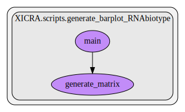

RNAbiotype¶
This script contains several functions. Here we show a graph representation of the different functions and relationships among them:
- XICRA.scripts.RNAbiotype.RNAbiotype_module_call(samples_dict, output_dict, gtf_file, Debug, max_workers_int, threads_job, multimapping, stranded)[source]¶
Create RNAbiotype analysis for each sample and create summary plots
- Parameters
samples_dict – Dictionary containing sample IDs as keys and bam files as values
output_dict – Dictionary containing sample IDs as keys and output folder as values
gtf_file – Gene annotation file for the reference genome used.
threads – Number of threads to use.
Debug – True/False for debugging messages
- XICRA.scripts.RNAbiotype.biotype_all(featureCount_exe, path, gtf_file, bam_file, name, threads, Debug, allow_multimap, stranded)[source]¶